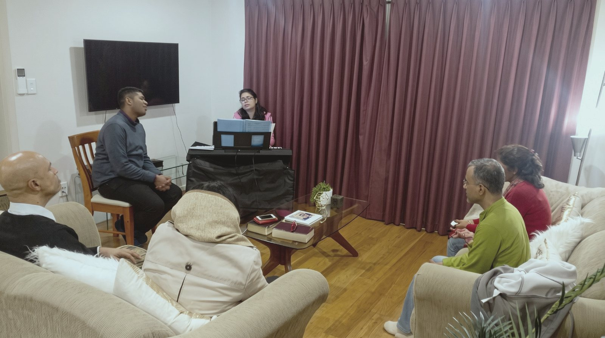

To be salt and light to our communities, our nation and the world, with Wednesday gatherings in every part of Auckland, and beyond.
01 — Our StorySince 10 January 2018
It Started with Two Families and a Promise
Sometimes God starts something much bigger than we realise—with something very small.
For us, it started with two families, an open home, and a simple decision: we would show up every Wednesday and pursue what God had placed on our hearts.

On 10 January 2018, we gathered in our home in Auckland to pray.
There was no big plan. No crowd. No impressive programme. Just a hunger for God.
We believed God was calling us to something deeper—to know Jesus, to grow in His Word, to learn to recognise His presence, and to become people who didn't just talk about faith, but actually lived it.
So we kept showing up. Week after week. Some Wednesdays, there were only a few of us. Other Wednesdays, the house was full. There were seasons when it would have been easy to wonder, “Is this really going anywhere?”
- ButWe kept praying.
- AndWe kept opening the Bible.
- AndWe kept encouraging one another.
- AndWe kept making room for the Holy Spirit.
And slowly, something began to happen. People's lives began to change.
Families were strengthened. People found Jesus. Some were baptised. Others experienced healing, deliverance, restoration and a renewed hunger for God.
We began to see that what started as a simple Wednesday gathering was becoming something much bigger than a weekly meeting.
It was becoming a community of disciples. And that is where Emmanuel is today.